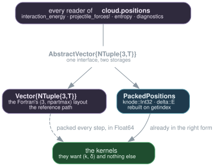

Architecture
How the code is laid out, what one time step does, and the few design decisions that shaped the rest.
Layers
The module is a stack: each file uses only the ones above it. Vlasov.jl lists them in dependency order, and that order is the architecture.
┌─────────────────────────────────────────────────────────────┐
│ simulation.jl SimulationParameters, Simulation, run! │ driver
├─────────────────────────────────────────────────────────────┤
│ accelerator.jl DeviceAccelerator, the step's device half│
│ devicemesh.jl DeviceMesh — the mesh's tables, mirrored │ device
│ kernels.jl every portable kernel (KernelAbstractions)│
│ gpu.jl ForceAccelerator — the interface alone │
├─────────────────────────────────────────────────────────────┤
│ projectile.jl Projectile, Softening, capture! │
│ energy.jl EnergyBudget, interaction_energy │ physics
│ entropy.jl occupation numbers, phase-space entropy │
│ initial.jl PhaseSpaceProfile, sample_thomas_fermi │
│ meanfield.jl Jellium, xc_potential │
├─────────────────────────────────────────────────────────────┤
│ fields.jl GaussianSmoothing, forces! │
│ particles.jl ParticleCloud, PackedPositions, Verlet │ particles
│ sorting.jl CellSort │
├─────────────────────────────────────────────────────────────┤
│ poisson.jl Multipole, poisson!, boundary_from_coarse│
│ deposition.jl deposit!, spline_coefficients! │ grid
│ mesh.jl SplineMesh, NestedMeshes │
├─────────────────────────────────────────────────────────────┤
│ tensorsolver.jl DiagonalizedOperator, TensorSolver │
│ collocation.jl CollocationMatrices, laplacian1d │ algebra
│ splines.jl SplineAxis, BasisIndex, LocateTable │
├─────────────────────────────────────────────────────────────┤
│ threading.jl chunking random.jl Ran2 │ base
└─────────────────────────────────────────────────────────────┘The device layer sits above the physics rather than beside it: it reuses every function below by supplying different arrays, and nothing below it knows it exists. The device path explains how that is arranged.
| File | Lines | What lives there |
|---|---|---|
splines.jl | 384 | Hermite basis, axes, knot ↔ collocation conversions, LocateTable |
collocation.jl | 94 | S, S′, S″ as banded matrices; the 1D operator |
tensorsolver.jl | 189 | Fast diagonalisation, mode-d products |
mesh.jl | 148 | Tensor meshes, nesting |
deposition.jl | 252 | Trilinear deposit, values ↔ coefficients, charge integral |
poisson.jl | 424 | Multipoles, boundary lifting, the two-level solve |
particles.jl | 361 | The cloud, both position forms, Verlet, leapfrog priming |
fields.jl | 425 | Smoothing tables, field and potential evaluation, forces! |
sorting.jl | 172 | Parallel counting sort by cell |
kernels.jl | 946 | Every portable kernel, for any KernelAbstractions backend |
accelerator.jl | 632 | DeviceAccelerator, its buffers, the device sort |
devicemesh.jl | 178 | The mesh's tables, mirrored device-side |
gpu.jl | 62 | Accelerator interface (implementations live in extensions) |
meanfield.jl | 147 | Jellium, LDA exchange-correlation |
initial.jl | 257 | Thomas–Fermi sampling, both profile kinds |
energy.jl | 120 | The energy budget |
entropy.jl | 196 | Occupation numbers and phase-space entropy |
projectile.jl | 304 | The ion, its softening, capture |
simulation.jl | 518 | Parameters, state, the time loop, both step paths |
threading.jl | 113 | Contiguous chunking, BLAS configuration |
random.jl | 90 | ran2, reproduced bit for bit |
One time step
step! runs the stages in the original code's order. The ordering is not a convenience: two of the stages measure energies against different potentials, and swapping them makes the total silently wrong.
┌──────────────────────────────────────────────────────────────────┐
│ 1. deposit_smoothed! cloud ──▶ ρ_fine (8³ stencil, threaded) │
│ deposit! cloud ──▶ ρ_coarse (2³ stencil) │
├──────────────────────────────────────────────────────────────────┤
│ 2. poisson! ρ ──▶ φ coarse first (multipole faces), │
│ then fine (faces read off coarse) │
├──────────────────────────────────────────────────────────────────┤
│ 3. spline_coefficients! φ ──▶ csol │
│ interaction_energy ── Hartree energy, on the BARE potential│
├──────────────────────────────────────────────────────────────────┤
│ 4. effective_potential! csol += V_xc[ρ] + V_jellium │
├──────────────────────────────────────────────────────────────────┤
│ 5. forces! csol ──▶ cloud.forces │
│ advance_projectile! ion ⇄ cloud, then the ion's Verlet │
│ step!(cloud, dt) position Verlet │
├──────────────────────────────────────────────────────────────────┤
│ 6. interaction_energy ── total energy, on the TOTAL potential │
│ energy_budget ──▶ EnergyBudget │
└──────────────────────────────────────────────────────────────────┘Stage 3 exists only between two lines: the Hartree energy has to be read before stage 4 overwrites the coefficients. That is why energy is a parameter of update_forces! and not something one can decide afterwards.
The three force regimes
forces! does not treat every particle alike. A particle is in one of three regimes, and the same three appear in interaction_energy — they must, or the budget and the dynamics would describe different systems.
·──────────── coarse grid ────────────·
│ │
│ ┌─────── fine grid ───────┐ │
│ │ │ │
│ │ ① smoothed field │ │ ③ Coulomb monopole
│ │ from csol_fine │ │ of the enclosed charge
│ └─────────────────────────┘ │
│ ② spline field from │
│ csol_coarse │
·─────────────────────────────────────·Key types
| Type | Holds |
|---|---|
SimulationParameters | grid sizes, domains, particle count, dt, rcmax |
Simulation | everything constant (meshes, tables, jellium) plus the evolving cloud |
ParticleCloud | positions, previous positions, forces, weight |
SplineMesh / NestedMeshes | one grid level, and the two-level pair |
GaussianSmoothing | the convolution tables of a constant-step axis |
Projectile | the ion, its Softening, its own Verlet |
EnergyBudget | kinetic, Hartree, mean field, ions, total |
Full docstrings in the API reference.
Decisions worth knowing
State is preallocated, not returned. A Simulation owns ρ, φ, csol and the scatter buffers. At 800 000 particles, allocating the coefficient arrays per step costs 2.8 MB and the garbage collection that follows. The buffers are explicit fields rather than a quiet allocation inside the deposition, because their memory grows as the cube of the grid.
The projectile is a type parameter, not a Union field. Simulation{T,P} carries P = Nothing or P = Projectile{T,S}. The isolated-cluster loop then compiles advance_projectile! down to nothing and pays zero for a feature it does not use.
Positions have two forms, and the container is a type parameter. The reference form is Vector{NTuple{3,T}} — exactly the memory layout of the Fortran's (3, npartmax) column-major arrays, which made the port a transliteration. The second is PackedPositions: cell index and offset, the form the kernels consume, which reconstructs the absolute triple on access so that every reader of cloud.positions works either way.

The cloud is therefore parameterised by its container, and the forces carry their own — they are a vector field, not positions. Which form a simulation uses is one keyword:
Simulation(p, profile; packed = true, backend = MetalBackend(), precision = Float32)The reason for the second form is numerical before it is architectural, and it is set out in The device path.
Out-of-domain particles are counted, not wrapped. Every deposition returns how many particles it refused. A few hundred out of 800 000 is healthy; 98 % means the cloud has exploded, and that return value is the cheapest state validation there is before a benchmark.
Parallelism
Every particle loop is split into contiguous chunks — not interleaved — so each thread works on a continuous region of memory (threading.jl). Reductions go through ScatterBuffers: one accumulator per thread, summed at the end.
That determinism is a tested property: the parallel deposition must return exactly what the sequential one returns, and repeat itself run to run. A deposit is a scatter; if two threads share a slot the error is silent and grows with the thread count.
Vlasov.PARALLEL[] = false # global switch, for A/B measurement and debugging
Vlasov.configure_blas!() # keep BLAS from fighting the particle loopsThe GPU path
Summarised here; The device path is the full account.
The kernels are written once, in KernelAbstractions, and run on CPU(), on Metal, and in principle on CUDA/ROCm/oneAPI — untested, for want of the hardware. gpu.jl declares ForceAccelerator and nothing else. Implementations live in a package extension, ext/VlasovMetalExt.jl, loaded only when the user loads Metal, and what remains in it is one thing: where the buffers live.
Project.toml
[weakdeps] Metal
[extensions] VlasovMetalExt = "Metal"
using Vlasov ──▶ CPU only, Float64, the reference path
using Vlasov, Metal ──▶ extension loads, ForceAccelerator becomes constructibleacc = ForceAccelerator(MtlArray, sim.meshes[1].axes, sim.smoothing,
npart, size(sim.csol[1], 1))
run!(sim; nsteps = 100, accelerator = acc)Apple GPUs have no double precision. The CPU path stays the reference — the only one comparable to the Fortran oracle at 1e-13. The GPU path is validated against it at the level the physics demands; see Performance.
Environments
| Environment | Holds | For |
|---|---|---|
. | the package | tests, CPU runs |
gpu/ | Metal, AppleAccelerate | the accelerated path |
viz/ | GLMakie | the interactive movie, scripts/film.jl |
docs/ | Documenter, CairoMakie | this documentation |
Dependencies are managed through Pkg — including weak ones, via Pkg.add(...; target = :weakdeps). Only the [extensions] table has no API and must be written by hand.
Scripts
| Script | What it does |
|---|---|
scripts/figure53.jl | reproduces the thesis stopping-power curve (figure 5.3) |
scripts/figure52.jl | reproduces the density cross-sections and the wake (figure 5.2) |
scripts/traversee.jl | one crossing, both softenings, both initial profiles |
scripts/profil_pas.jl | stage-by-stage profile of one step, in sequence |
scripts/bench_gpu.jl | CPU vs GPU: speed and accuracy, side by side |
scripts/depot_gpu.jl | the two deposition routes, measured |
scripts/film_images.jl | dumps density slices for a movie |
scripts/film.jl | interactive viewer and MP4 export |